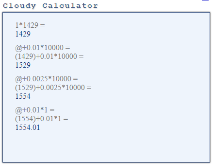
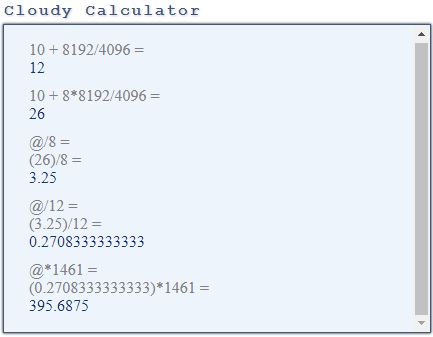

Here is the first test I’ve done for my Postgres vs. Oracle access paths series and the first query did a sequential scan. It illustrates the first constant you find in the documentation for the query planner: seq_page_cost (floating point) Sets the planner’s estimate of the cost of a disk page fetch that is part of a series of sequential fetches. The default is 1.0.
I start by creating a very simple table with 10000 rows and 3 columns. The first column(n) is indexed:
create table demo1 as select generate_series n , 1 a , lpad('x',1000,'x') x from generate_series(1,10000);
SELECT 10000
create unique index demo1_n on demo1(n);
CREATE INDEX
analyze verbose demo1;
INFO: analyzing "public.demo1"
INFO: "demo1": scanned 1429 of 1429 pages, containing 10000 live rows and 0 dead rows; 10000 rows in sample, 10000 estimated total rows
ANALYZE
select relkind,relname,reltuples,relpages from pg_class where relname='demo1';
relkind | relname | reltuples | relpages
---------+---------+-----------+----------
r | demo1 | 10000 | 1429
select relkind,relname,reltuples,relpages from pg_class where relname='demo1_n';
relkind | relname | reltuples | relpages
---------+---------+-----------+----------
i | demo1_n | 10000 | 30
I checked the table and index statistics that will be used by the optimizer: 10000 rows, all indexed, 1429 table blocks and 30 index blocks. Note that blocks are called pages, but that’s the same idea: the minimal size read and written to disk. They are also called buffers as they are read into a buffer and cached in the buffer cache.
Here is how I create a similar table in Oracle:
create table demo1 as select rownum n , 1 a , lpad('x',1000,'x') x from xmltable('1 to 10000');
Table created.
create unique index demo1_n on demo1(n);
Index created.
exec dbms_stats.gather_table_stats(user,'demo1');
PL/SQL procedure successfully completed.
select table_name,num_rows,blocks from user_tables where table_name='DEMO1';
TABLE_NAME NUM_ROWS BLOCKS
---------- ---------- ----------
DEMO1 10000 1461
select index_name,num_rows,leaf_blocks,blevel from user_indexes where table_name='DEMO1';
INDEX_NAME NUM_ROWS LEAF_BLOCKS BLEVEL
---------- ---------- ----------- ----------
DEMO1_N 10000 20 1
The same rows are stored in 1421 table blocks and the index entries in 20 blocks. Both use 8k blocks, but different storage layout and different defaults. This is about 7 rows per table blocks, for rows that are approximately larger than 1k and about 500 index entries per index block to store the number for column N plus the pointer to table row (a few bytes called TID in Postgres or ROWID for Oracle). I’ll not get into the details of the number here. More about the row storage:
My goal is to detail the execution plans and the execution statistics.
I start with a very simple query on my table: SELECT SUM(N) from DEMO1;
explain (analyze,verbose,costs,buffers) select sum(n) from demo1 ;
QUERY PLAN
-----------------------------------------------------------------------------------------------------------------------
Aggregate (cost=1554.00..1554.01 rows=1 width=8) (actual time=4.616..4.616 rows=1 loops=1)
Output: sum(n)
Buffers: shared hit=1429
-> Seq Scan on public.demo1 (cost=0.00..1529.00 rows=10000 width=4) (actual time=0.011..3.614 rows=10000 loops=1)
Output: n, a, x
Buffers: shared hit=1429
Planning time: 0.468 ms
Execution time: 4.661 ms
This query does a sequential scan (Seq Scan), which is the equivalent of Oracle Full Table Scan: read all rows from the table. You might tell me that it would be cheaper to scan the index because the index I’ve created holds all required columns. We will see that in the next post. Here, after having created the table as I did above, the query planner prefers to scan the table.
Here are the maths: my table has 1429 pages and each page access during a sequential scan has cost=1 as defined by:
show seq_page_cost; seq_page_cost --------------- 1Here, I see a cost estimated from 0 to 1529 for the Seq Scan operation. The first number, 0.00 is the initialization cost estimating the work done before returning any rows. A Seq Scan has nothing to do before, and reading the first block can already return rows. The second number is the cost to return all rows. We have seen that the scan itself costs 1429 but the rows (tuples) must be read and processed. This is evaluated using the following constant:
show cpu_tuple_cost; cpu_tuple_cost ---------------- 0.01For 10000 rows, the cost to process them is 0.01*10000=100 which is an additional cost over the Seq Scan 1429 to get it to 1529. This explains cost=0.00..1529.00
Then there is a SUM operation applied to 10000 rows and there is a single parameter for the CPU cost of operators and functions:
show cpu_operator_cost; cpu_operator_cost ------------------- 0.0025
 The sum (Aggregate) operation adds 0.0025*10000=25 to the cost and then the cost is 1554. You can see this cost in the minimal cost for the query, the first number in cost=1554.00..1554.01, which is the cost before retrieving any rows. This makes sense because before retrieving the first row we need to read (Seq Scan) and process (Aggregate) all rows, which is exactly what the cost of 1554 is.
Then there is an additional cost when we retrieve all rows. It is only one row here because it is a sum without group by, and this adds the default cpu_tuple_cost=0.01 to the initial cost: 1554.01
In summary, The total cost of the query is cost=1554.00..1554.01 and we have seen that it depends on: – number of pages in the table – number of rows from the result of the scan (we have no where clause here) – number of rows summed and retrieved – the planner parameters seq_page_cost, cpu_tuple_cost, and cpu_operator_cost
When I run the same query on Oracle, the optimizer chooses an index fast full scan rather than a table full scan because all rows and columns are in the index that I’ve created:
We will see that in the next post, for the moment, in order to compare with Postgres, I forced a full table scan with the FULL() hint.
PLAN_TABLE_OUTPUT
------------------------------------------------------------------------------------------------------------------------------------------------------
SQL_ID bhsjquhh6y08q, child number 0
-------------------------------------
select /*+ full(demo1) */ sum(n) from demo1
---------------------------------------------------------------------------------------------------
| Id | Operation | Name | Starts | E-Rows | Cost (%CPU)| A-Rows | A-Time | Buffers |
---------------------------------------------------------------------------------------------------
| 0 | SELECT STATEMENT | | 1 | | 397 (100)| 1 |00:00:00.01 | 1449 |
| 1 | SORT AGGREGATE | | 1 | 1 | | 1 |00:00:00.01 | 1449 |
| 2 | TABLE ACCESS FULL| DEMO1 | 1 | 10000 | 397 (0)| 10000 |00:00:00.01 | 1449 |
---------------------------------------------------------------------------------------------------
Column Projection Information (identified by operation id):
-----------------------------------------------------------
1 - (#keys=0) SUM("N")[22]
2 - (rowset=256) "N"[NUMBER,22]
We have seen that Postgres cost=1 is for sequential scans (similar to what we call multiblock reads in Oracle) and random reads (single block reads) have by default cost=4 according to random_page_cost.
Oracle cost unit is based on single block reads and this is why the cost here (397) is lower than the number of blocks (1461). Different units. Postgres counts cost=1 for reads and counts a higher cost when a seek is involved. Oracle counts cost=1 for single block reads (including seek) and lower cost for larger I/O size.  With the default system statistics, where latency is estimated 10 milliseconds and transfer is estimated to 4KB/ms. The single block read time is estimated to 12 milliseconds (10 + 8192/4096). Again with the default system statistics where optimizer estimates 8 blocks per multiblock read, the multiblock read time is estimated to 26 milliseconds (10 + 8*8192/4096) which is on average 26/8=3.25 millisecond per block. This means that the ratio of single vs. multi block read is very similar for Oracle (3.25/12=0.27833333) and Postgres (seq_page_cost /random_page_cost=1/4=0.25) with default parameters.
Our table is stored in 1461 blocks and the full table scan involves reading all of them plus some segment header blocks. 1461*0.27833333=396
There is also the costing of CPU (the equivalent to cpu_tuple_cost) which is included here but I’ll not go into the details which are more complex than in Postgres and depends on your processor frequency. The goal of those posts is about Postgres. For Oracle, all this is explained in Jonathan Lewis and Chris Antognini books.
But basically, the idea is the same: Postgres Seq Scan and Oracle Full table Scan read the contiguous table blocks sequentially and the cost mainly depends on the size of the table (number of blocks) and the estimated time for sequential I/O (where bandwidth counts more than latency).
In my tests, I’ve not only explained the query, but I executed it to get execution statistics. This is done with EXPLAIN ANALYZE in Postgres and DBMS_XPLAN.DISPLAY_CURSOR in Oracle. The statistics include the number of blocks read at each plan operation, with the BUFFERS option in Postgres and with STATISTICS_LEVEL=ALL in Oracle.
explain (analyze,buffers) select sum(n) from demo1 ;
QUERY PLAN
----------------------------------------------------------------------------------------------------------------
Aggregate (cost=1554.00..1554.01 rows=1 width=8) (actual time=3.622..3.622 rows=1 loops=1)
Buffers: shared hit=1429
-> Seq Scan on demo1 (cost=0.00..1529.00 rows=10000 width=4) (actual time=0.008..1.724 rows=10000 loops=1)
Buffers: shared hit=1429
Planning time: 0.468 ms
Execution time: 4.661 ms
‘Buffers’ displays the number of blocks that have been read by the Seq Scan and is exactly the number of pages in my table. ‘shared hit’ means that they come from the buffer cache.
Let’s run the same when the cache is empty:
explain (analyze,verbose,costs,buffers) select sum(n) from demo1 ;
QUERY PLAN
------------------------------------------------------------------------------------------------------------------------
Aggregate (cost=1554.00..1554.01 rows=1 width=8) (actual time=13.837..13.837 rows=1 loops=1)
Output: sum(n)
Buffers: shared read=1429
-> Seq Scan on public.demo1 (cost=0.00..1529.00 rows=10000 width=4) (actual time=0.042..12.506 rows=10000 loops=1)
Output: n, a, x
Buffers: shared read=1429
Planning time: 3.754 ms
Execution time: 13.906 ms
The buffers are now ‘shared read’ instead of ‘shared hit’. In Postgres, the number of logical reads, as we know them in Oracle, is the sum of hits and reads. In Oracle, all blocks are counted as logical reads, which includes the smaller set of physical reads.
Here is more about the reads when the block is not in the buffer cache. On Linux, we can trace the system calls to see how those sequential I/Os are implemented.
I get the ‘relfilenode':
postgres=# select relname,relnamespace,reltype,relowner,relfilenode,relpages,reltuples from pg_class where relname='demo1'; relname | relnamespace | reltype | relowner | relfilenode | relpages | reltuples ---------+--------------+---------+----------+-------------+----------+----------- demo1 | 2200 | 42429 | 10 | 42427 | 1429 | 10000
I get the pid of my session process:
select pg_backend_pid(); -[ RECORD 1 ]--+------ pg_backend_pid | 30732
I can trace system calls:
strace -p 30732
And look at the trace concerning my file (identified with its ‘relfilenode’):
30732 open("base/12924/42427", O_RDWR) = 33
30732 lseek(33, 0, SEEK_END) = 11706368
30732 open("base/12924/42427_vm", O_RDWR) = 43
30732 lseek(33, 0, SEEK_END) = 11706368
30732 lseek(33, 0, SEEK_END) = 11706368
30732 lseek(33, 0, SEEK_SET) = 0
30732 read(33, "\4004\220\3 \4 \360\233\30\10\340\227\30\10"..., 8192) = 8192
30732 read(33, "\4004\220\3 \4 \360\233\30\10\340\227\30\10"..., 8192) = 8192
30732 read(33, "\4004\220\3 \4 \360\233\30\10\340\227\30\10"..., 8192) = 8192
... 1429 read(33) in total
We see two open() calls with the relfilenode of my table in the file name: one for the table and one for the visibility map The file descriptor for the table file is 33 and I’ve grepped only the related calls. The lseek(33,0,SEEK_END) goes to the end of the file (11706368 bytes, which is 11706368/8192=1429 pages. The lseek(33,0,SEEK_SET) goes to the beginning of the file. Subsequent read() calls read the whole file, reading page per page (8192 bytes), in sequential order.
This is how sequential reads are implemented in Postgres: one lseek() and sequential read() calls. The I/O size is always the same (8k here). The benefit of sequential scan is not larger I/O calls but simply the absence of seek() in between. The optimization is left to the underlying layers filesystem and read-ahead.
This is very different from Oracle. Not going into the details, here are the kind of system calls you see during the full table scan:
open("/u01/oradata/CDB1A/PDB/users01.dbf", O_RDWR|O_DSYNC) = 9
fcntl(9, F_SETFD, FD_CLOEXEC) = 0
fcntl(9, F_DUPFD, 256) = 258
...
pread(258, "\6\242\2\5\3\276\25%\2\4\24\270\1\313!\1x\25%"..., 1032192, 10502144) = 1032192
pread(258, "\6\242\202\5\3\300\25%\2\4\16\247\1\313!\1x\25%"..., 1032192, 11550720) = 1032192
pread(258, "\6\242\2\6\3\302\25%\2\4x\226\1\313!\1x\25%"..., 417792, 12599296) = 417792
Those are also sequential reads of contiguous blocks but done with larger I/O size (126 blocks here). So in addition to the absence of seek() calls, it is optimized to do less I/O calls, not relying on the underlying optimization at OS level.
Oracle can also trace the system calls with wait events, which gives more information about the database calls:
WAIT #140315986764280: nam='db file scattered read' ela= 584 file#=12 block#=1282 blocks=126 obj#=74187 tim=91786554974 WAIT #140315986764280: nam='db file scattered read' ela= 485 file#=12 block#=1410 blocks=126 obj#=74187 tim=91786555877 WAIT #140315986764280: nam='db file scattered read' ela= 181 file#=12 block#=1538 blocks=51 obj#=74187 tim=91786556380
The name ‘scattered’ is misleading. ‘db file scattered read’ are actually multiblock reads: read more than one block in one I/O call. Oracle does not rely on the Operating System read-ahead and this is why we can (and should) use direct I/O and Async I/O if the database buffer cache is correctly sized.
I’ve run the EXPLAIN with the VERBOSE option which shows the ‘Output’ for each operation, and I’ve done the equivalent in Oracle by adding the ‘+projection’ format in DBMS_XPLAN.
In the Oracle execution plan, we see the columns remaining in the result of each operation, after the projection:
Column Projection Information (identified by operation id):
-----------------------------------------------------------
1 - (#keys=0) SUM("N")[22]
2 - (rowset=256) "N"[NUMBER,22]
The operation 2, the Full Table Scan, reads all rows with all columns, but selects only the one we need: N
In the Postgres equivalent, it seems that the Output mentions the columns available before the projection because we see all table columns here:
explain verbose select sum(n) from demo1 ;
QUERY PLAN
-------------------------------------------------------------------------
Aggregate (cost=1554.00..1554.01 rows=1 width=8)
Output: sum(n)
-> Seq Scan on public.demo1 (cost=0.00..1529.00 rows=10000 width=4)
Output: n, a, x
I prefer to see the columns after the projection and I use it a lot in Oracle to know which columns are needed from the table. A great optimization can be done when we have a covering index where all selected columns are present so that we don’t have to go to the table. But we will see that in the next post about Index Only Scan.
Very interesting and informative read. Thank you for this! Also, can’t wait for the next part!
Thanks a lot for your feedback. Next part arrives very soon explaining why Postgres did not use the index here.
Well, PostgreSQL is well-known for not having “index FAST full scan”. Is it surprising it declined “index scan” (that produces random reads) in favor of plain table scan (that is sequential)?
I was surprised because random reads on 30 index pages should be estimated cheaper than sequential reads on 1429 table pages. Then I learned that Postgres MVCC is very different from Oracle MVCC… next post soon.
Thank you for sharing it!!